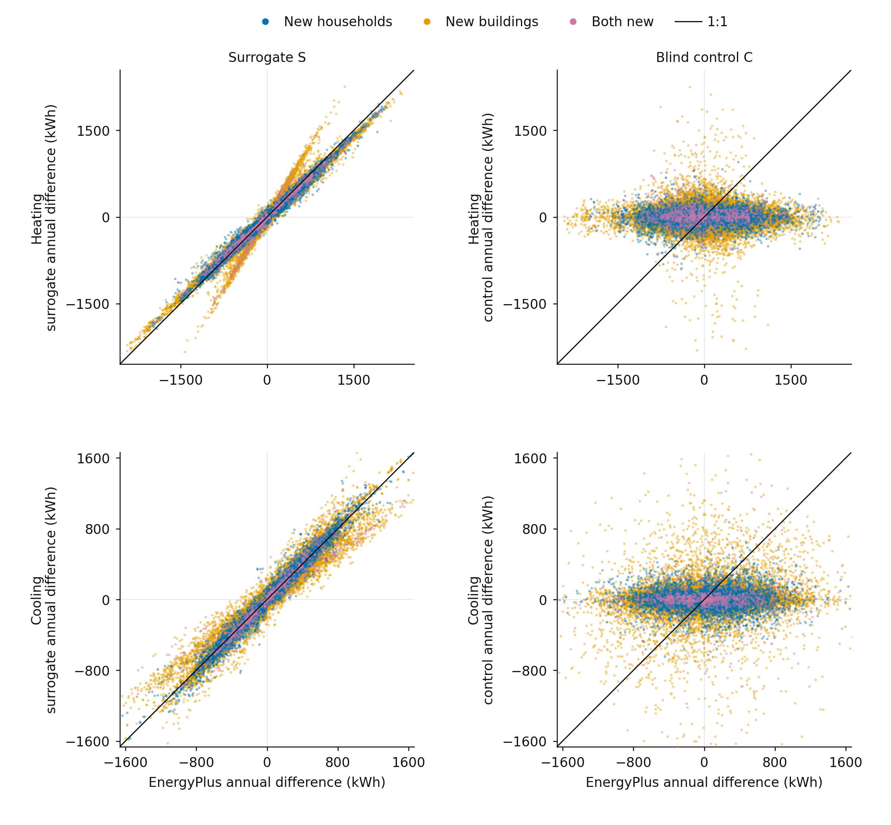
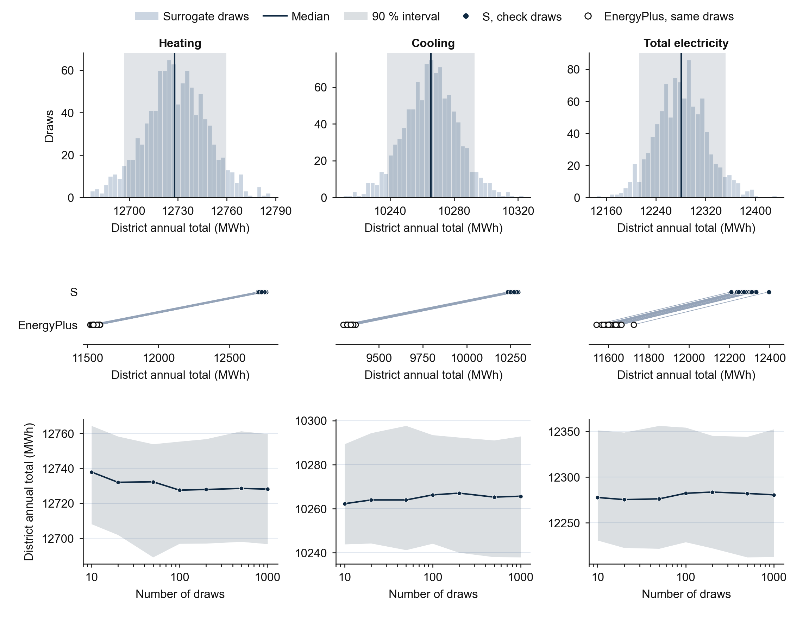

Can a fast surrogate of EnergyPlus reproduce what households do to the load?
The 5J paper on one page: the question, the method, the pilot findings and the expanded study now under way. Updated on 1 October 2026 after the decision to expand the paper.
In one sentence: a neural surrogate of EnergyPlus, trained on simulations in which only the household changes, reproduced the difference that a household makes to the hourly load far more often than the load itself in a pilot on standard buildings; the paper now tests the same idea in real neighbourhoods, with each country's households built only from that country's own diaries.
01The goal
The problem
Stock energy models usually assume one household per dwelling type: the same people, at home at the same hours, in every flat. Real households differ. In the same flat, a retired couple who stay in all day and a family of four who leave at eight in the morning heat, cool and use appliances at different hours and in different amounts. To show this spread, a stock model has to simulate many households in every building, and each household costs one full EnergyPlus run. Across thousands of dwellings the cost is too high, so most studies keep one average schedule and the spread between households is lost.
A surrogate, a neural network trained to imitate EnergyPlus, answers in a fraction of a second and could remove this cost. Surrogates, however, are judged on how close their predicted load is to the simulated one. A household moves the load of a flat only a little, so a surrogate can predict the load closely while it ignores who lives there. Load accuracy alone cannot show whether a surrogate has learned anything about households.
The question
If a surrogate is trained on simulations in which only the household changes, does it learn what the household does to hourly heating, cooling and electricity, in real buildings and for households it has never seen? And is it better at this difference than at the load itself?
02How the question is answered
The paper has three parts: a pilot on standard buildings (finished), Model A in two real neighbourhoods with Spanish and Italian households (being designed), and Model B, which adds a London neighbourhood with UK households only if the UK Data Service agrees.
1 · DiariesNational time-use surveys give each household its size, its hours at home and its activities. Each country's households use only that country's diaries.
2 · NeighbourhoodsReal buildings from OpenUBEM, divided into floors and flats: Madrid Berruguete (about 1,150 buildings) and Bologna Galvani 2 (about 1,170); London St Dunstan's in Model B.
3 · PairsEach building is simulated several times, each time with different households in its flats, so any change in a flat's load belongs to the household.
4 · SealHouseholds, their diary days and buildings are split before any training; no diary day used in training appears in a test household.
5 · TrainCandidate models are trained on a graphics card and chosen on validation data alone, as in the pilot.
6 · Score onceThe chosen model is scored once on each sealed test set (new households, new buildings, both new) with the rules frozen in the pilot.
7 · CompareThe occupancy runs are set against the default-schedule runs of the same buildings, to show what one average schedule misses.
The two ideas that make the test fair
Score the difference, not only the load. For two households in the same flat, the model must predict the hourly difference between their loads. This difference is called the occupancy effect.
A control that must fail. The same model is trained with the household inputs shuffled, so it cannot know who lives in the flat. If this control passed, the test would measure nothing.
Each test set is divided into cells: country × building type × use (heating, cooling, appliance electricity and total electricity).
03Pilot findings (standard buildings, Spain and Italy)
31 / 32
cells in which the occupancy effect passes for new households (31 of 32 for new buildings, 26 of 28 when both are new)
0
cells in which the household-blind control passes; the test therefore measures real use of the household
21, 14, 14 / 32
cells in which the hourly load itself meets the usual accuracy standard for calibrated models (ASHRAE Guideline 14)
61×
faster than EnergyPlus on a graphics card; on one ordinary processor core, only 1.2 times faster
The main message of the pilot
The surrogate was better at the difference between households than at the load itself. A surrogate that meets the usual load standard is therefore not shown to be right about households, and one that misses it can still be right about them. Model A tests whether this holds in real buildings.

Pilot Figure 3: the yearly difference between two households in the same flat, predicted against simulated, for heating and cooling. The surrogate's points lie along the diagonal; the blind control's points lie flat around zero.
Further pilot findings
Most of the yearly effect comes from household size and appliances. Household size and appliance level explain 73 to 98 % of the yearly difference between two households. The timing of presence matters more hour by hour than over a whole year.
Peak hours are well placed. The daily peak hour is predicted within one hour in 8 of 8 groups on every test set.
On a Madrid district of standard-building stand-ins, the surrogate reproduced the spread, but not always the level. Over 1,000 draws of households for 2,034 dwellings, the district needs 12,728 MWh of heating a year, and 90 % of the draws fall between 12,697 and 12,760 MWh. On 20 draws also run in EnergyPlus, the surrogate followed how the district total moves from one draw to the next (correlation 0.97 to 0.9999), with a heating level 7.6 % below EnergyPlus for buildings similar to its training buildings and 58 % above for buildings unlike them.

Pilot Figure 5: the Madrid district of stand-in buildings. Top: the spread of the yearly totals over 1,000 draws. Middle: surrogate against EnergyPlus on the 20 check draws, in the same order but at a different level. Bottom: how the median and the 90 % range settle as draws are added.
What the pilot left open, and how the main study answers it
Diary days from another country's data. The pilot's Spanish and Italian households used days made by an earlier generator that learned partly from UK diaries. The main study builds every household from real days of its own country.
Shared diary days. In the pilot, training and test households could draw the same days. The main study splits the diary days with the households.
Standard buildings, not real ones. The pilot used typical buildings with one weather year per city. The main study uses the real buildings of two neighbourhoods.
The result depends on the training run. Two other random seeds passed far fewer validation cells (22 and 13 of 32, against 30). The main study again trains three seeds and reports each.
A new country needs its own data. Trained on one country, the model transferred poorly to the other (0 to 3 and 9 to 10 of 16 cells). More countries are being sought (research prompts on European diary data).
The speed depends on a graphics card. On one processor core the surrogate is about as slow as EnergyPlus.
04Where the paper stands
The pilot is finished and checked. The main study is being designed. The manuscript will be rewritten around Model A, with the pilot as an earlier chapter.
DonePilot: standard buildings, 9,269 EnergyPlus runs, sealed tests, training, one scoring and the Madrid stand-in district, every number re-derived with independent code; first draft and Figures 1 to 5.
In progressModel A design: the buildings of Madrid Berruguete and Bologna Galvani 2, households from each country's own diaries, new sealed tests. Facts about the neighbourhood files are being collected now.
WaitingDefault-schedule runs of the neighbourhoods (being re-run by you, expected on 2 October), for the comparison.
Your partThree research prompts on European diary data (open files, application routes, overall list), the novelty search, the figure fixes, the journal choice and the declarations.
One open step (yours): the UK Data Service email. Model B (London with UK households) needs the UK Data Service's written agreement, because the licence forbids AI tools with UK data. The email with six yes or no questions is ready in the e-mails folder. If they refuse, the paper ends with Model A and the UK is named as a limitation.